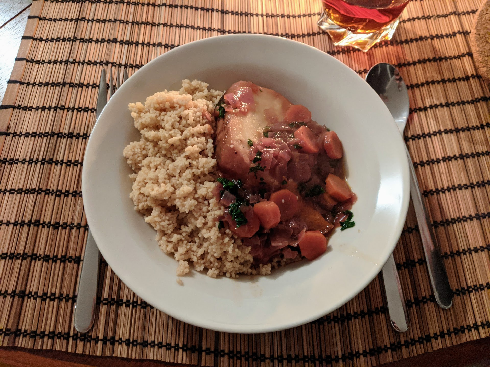

Céleri-rave entier à l'orange

Pour 4 personnes :
- Un beau céleri-rave
- Deux oignons rouges
- Trois carottes
- Quatre oranges bio
- Trois clous de girofle
- Deux feuilles de laurier
- Une étoile de badiane
- Une cuillère à soupe de sucre (roux de préférence)
- Un petit bouquet de coriandre ou de persil
- Huile d'olive, sel, poivre
- Éplucher le céleri-rave. Le faire dorer entier dans une cocotte avec de l'huile d'olive jusqu'à ce que ça soit joliment coloré de tous les côtés. Il faut bien surveiller, ça brûle rapidement sinon.
- Éplucher et couper les oignons et les carottes en petit bouts. Les rajouter dans la cocotte quand le céleri est doré.
- Peler deux oranges avec un épluche-légumes pour récupérer des gros morceaux de zeste. Presser toutes les oranges. Ajouter le jus, le zeste, le sucre, les clous de girofle, les feuilles de laurier et l'étoile de badiane dans la cocotte. Saler, poivrer.
- Laisser mijoter au moins une heure, mais possiblement deux en fonction de la taille du céleri, jusqu'à ce que ça soit relativement facile de planter un couteau dedans (mais sans attendre que ça soit trop mou).
- Vers la fin, laver et ciseler les herbes et les rajouter dans le jus de cuisson quelques minutes. Couper le céleri en grosses parts, et le servir chaud avec son jus, par exemple accompagné de semoule.
Retour à la liste des recettes